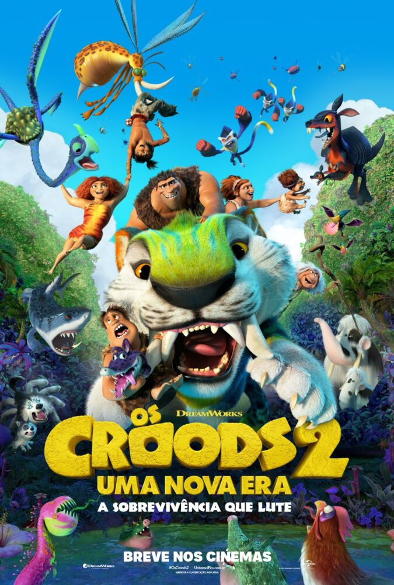
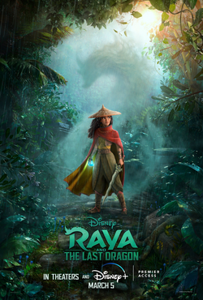

Os Croods 2

Lançamento: 2020
Imdb: 7,0/10 
Sinopse: Em busca de um habitat mais seguro, a família pré-histórica Crood descobre um
paraíso isolado que atende a todas as suas necessidades. Infelizmente, eles também devem aprender a
viver com os Bettermans, uma família que está alguns degraus acima dos Croods na escada evolutiva. À
medida que as tensões entre os novos vizinhos começam a aumentar, uma nova ameaça logo impulsiona os
dois clãs em uma aventura épica que os força a abraçar suas diferenças e se fortalecerem e
sobreviverem juntos.
Assista ao trailer AQUI
Raya e o Último Dragão

Lançamento: 2021
Imdb: 7,4/10
Sinopse: Há muito tempo, no mundo de fantasia de Kumandra, humanos e dragões viviam juntos em
harmonia. Mas quando uma força maligna ameaçou a terra, os dragões se sacrificaram para salvar a
humanidade. Agora, 500 anos depois, o mesmo mal voltou e cabe a uma guerreira solitária, Raya,
rastrear o lendário último dragão para restaurar a terra despedaçada e seu povo dividido.
Assista ao trailer AQUI